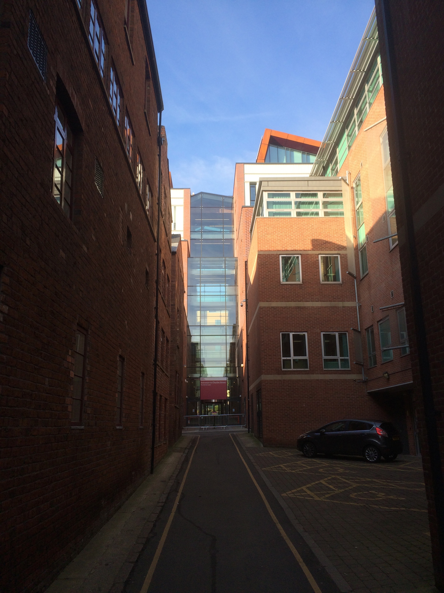
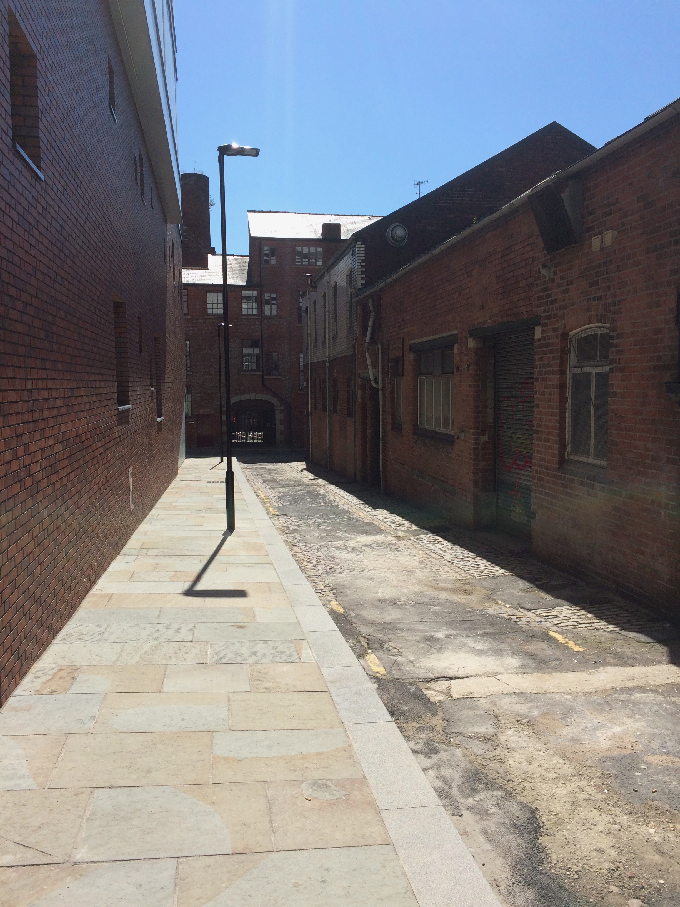

Computing Courses
Cantor College offers a wide range of computing courses designed to support students with different backgrounds and ambitions. Our programmes combine academic theory with practical experience to prepare students for careers in the technology sector.
Undergraduate Courses
- BSc (Hons) Computing
- BSc (Hons) Computer Networks
- BSc (Hons) Software Engineering
- BSc (Hons) Cyber Security with Forensics
Postgraduate Study
We offer postgraduate programmes including MSc and PhD opportunities, allowing students to specialise further and develop advanced skills in computing and research.
Why Study With Us?
- Industry-relevant curriculum
- British Computer Society accredited courses
- Access to modern computing labs
- Strong links with employers

